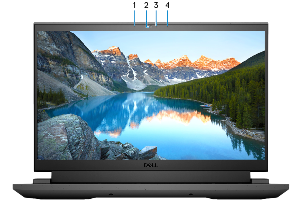

Lado direito
1.Portas USB 3.2 de 1ª geração (2 entradas)
Conecte dispositivos como os de armazenamento externo e impressoras. Fornece velocidades de transferência de dados de até 5 Gbps.
Lado Esquerda
1.Porta de rede
Conecte um cabo Ethernet (RJ45) de um roteador ou de um modem de banda larga para acesso á rede ou à Internet.
2.Porta para fone de ouvido com microfone
Conecte fones de ouvido ou um headset (fone de ouvido e microfone combinados).
3.Luz de status da bateria
Indica o status da carga da bateria.
Âmbar contínuo - carga da bateria está baixa.
Âmbar piscando - carga da bateria está crítica.
Desligada - a bateria está completamente carregada.
Parte traseira
Em computadores fornecidos com NVIDIA GeForce RTX 3050 Ti
1.Porta USB 3.2 de 2ª geração (Tipo C) com DisplayPort
Conecte dispositivos como os de armazenamento externo, impressoras e monitores externos. Fornece velocidades de transferência de dados de até 10 Gbps.
Suporta DisplayPort 1.4 e também permite que você conecte um monitor externo usando um adaptador de vídeo.
2.Porta USB 3.2 de 1ª geração
Conecte dispositivos como os de armazenamento externo e impressoras. Fornece velocidades de transferência de dados de até 5 Gbps.
3.Porta HDMI
Conecte a uma TV, tela externa ou outro dispositivo habilitado com entrada HDMI. Fornece uma saída de vídeo e áudio.
Porta do adaptador de energia
Conecte um adaptador de energia para fornecer energia ao computador e carregar a bateria.
Em computadores fornecidos com NVIDIA GeForce RTX 3060
1.Thunderbolt 4
Suporta Thunderbolt 4 e também permite que você conecte um monitor externo usando uma placa gráfica. Ela proporciona taxas de transferência de dados de 40 Gbps para Thunderbolt 4.
Demais opções semelhantes ao computador fornecidos com NVIDIA GeForce RTX 3050 Ti
Tela
1.Microfone esquerdo
Fornece entrada de som digital para gravação de áudio e chamadas de voz.
2.Câmera
Habilita efetuar chamadas de bate-papo com vídeo, capturar fotos e gravar vídeos.
3.Luz de status da câmera
Fornece entrada de som digital para gravação de áudio e chamadas de voz.
Cima
1.Touchpad
Mova o dedo pelo touchpad para mover o ponteiro do mouse. Toque para clicar com o botão esquerdo, e toque com dois dedos para clicar com o botão direito.
2.Área de clique com o botão esquerdo
Pressione para clicar com o botão esquerdo.
3.Área de clique com o botão direito
Pressione para clicar com o botão direito.
4.Botão liga/desliga
Pressione este botão para ligar o computador se ele estiver desligado, em estado de suspensão ou em estado de hibernação.
Quando o computador estiver ligado, pressione o botão liga/desliga para colocar o computador no modo de espera. Pressione e mantenha pressionado o botão liga/desliga por 10 segundos para forçar o desligamento do computador.
Inferior

1.Alto-falante esquerdo
Fornece saída de áudio.
2.Etiqueta do rótulo de serviço
A etiqueta de serviço é um identificador alfanumérico exclusivo que habilita os técnicos de serviço da Dell a identificar os componentes de hardware no computador e acessar informações de garantia.
3.Alto-falante direito
Fornece saída de áudio.